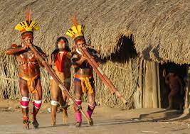
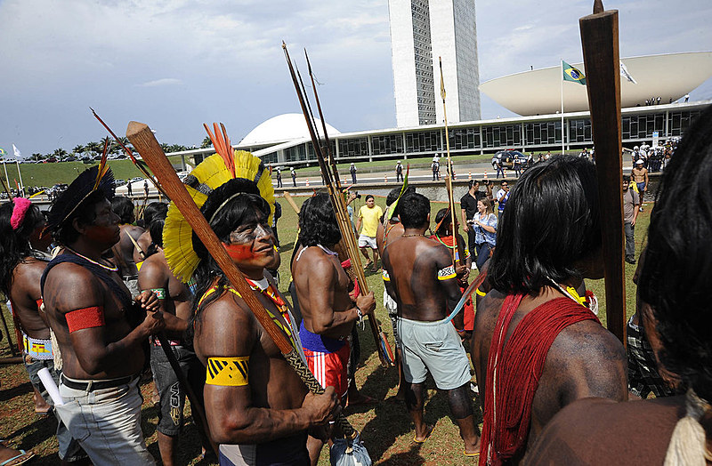
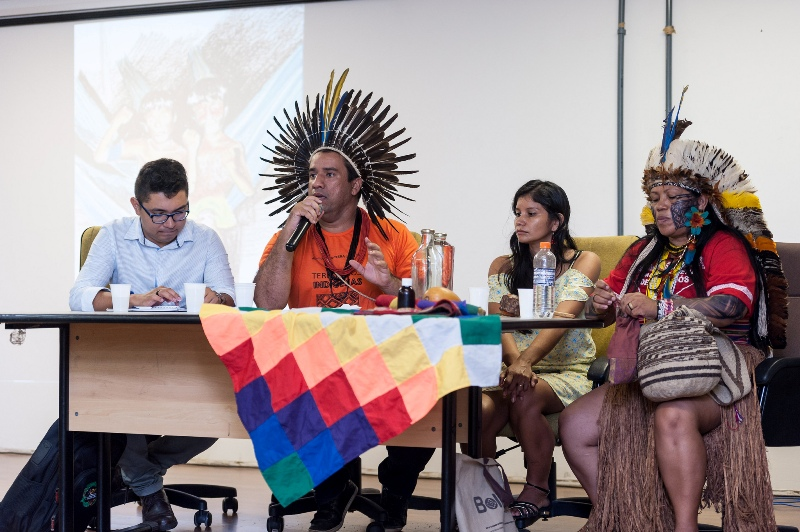

CULTURA E TRADIÇÕES:
Os povos indígenas do Brasil desempenham um papel vital na preservação da rica diversidade cultural e das tradições ancestrais. Suas línguas, rituais, artesanato e conhecimentos sobre plantas medicinais contribuem para a identidade cultural do país.
LUTA POR TERRITÓRIO:
A luta pela demarcação e proteção das terras indígenas é uma questão central. Os indígenas têm desempenhado um papel ativo na defesa de seus territórios contra a exploração predatória, mineração e invasões ilegais, buscando preservar o ambiente natural.
PARTICIPAÇÃO POLÍTICA E SOCIAL:
Nos últimos anos, houve um aumento na participação política indígena no Brasil. Muitos líderes indígenas se envolvem em questões políticas, buscando representação e voz ativa em decisões que afetam suas comunidades. Isso inclui a luta por direitos básicos, como educação e saúde.